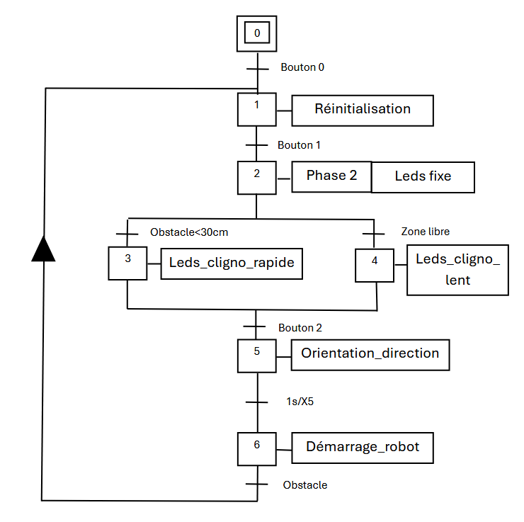
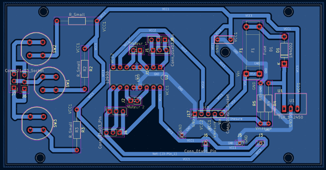
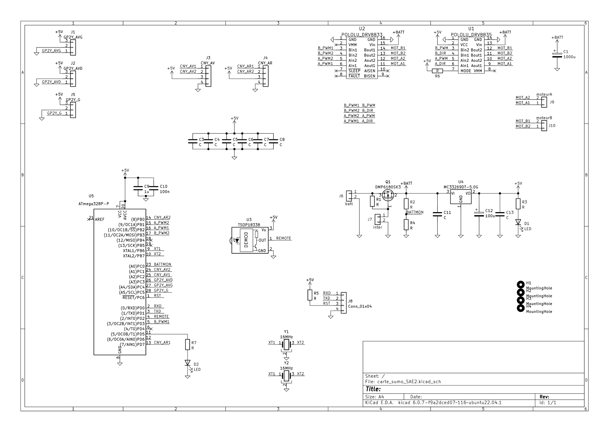

COMPÉTENCE 01
Concevoir
Définir une solution en réponse à un besoin, en tenant compte des contraintes fonctionnelles et techniques.
Exemples liés à mon parcours
- Robot mobile slalomeur (SAE 2 de BUT 1) : le projet d’équipe a conduit à un dossier de fabrication KiCad, à une carte électronique et à deux GRAFCET pour le déplacement et le balayage des cinq directions. Le compte rendu définit l’évitement d’obstacles comme objectif.
- Robot mini-sumo : j'ai conçu le circuit imprimé sous KiCad, puis préparé sa fabrication en perçant la carte. J'ai également étudié la partie énergétique et contribué au DDC sur ce sujet. Le schéma, le routage et le GRAFCET illustrent les éléments de conception disponibles.
- Mugochaud : j'ai traduit le GRAFCET dans TIA Portal pour structurer le fonctionnement du système. J'ai aussi contribué aux dossiers DDC, DDV et DDF afin de formaliser le travail de l'équipe.
- Stage chez SG ENERGIES : l'analyse des schémas de procédé P&ID m'a permis de comprendre l'installation simulée et de préparer les logiques de contrôle, les boucles de régulation et les synoptiques associés.
- Poste automatisé (SAE de BUT 3) : le cahier des charges présente les transferts entre la ligne et un magasin de 12 places, les séquences du robot et les vues IHM. Cette fiche présente le sujet et ses principales exigences.
Voir la fiche de la SAE ↗



